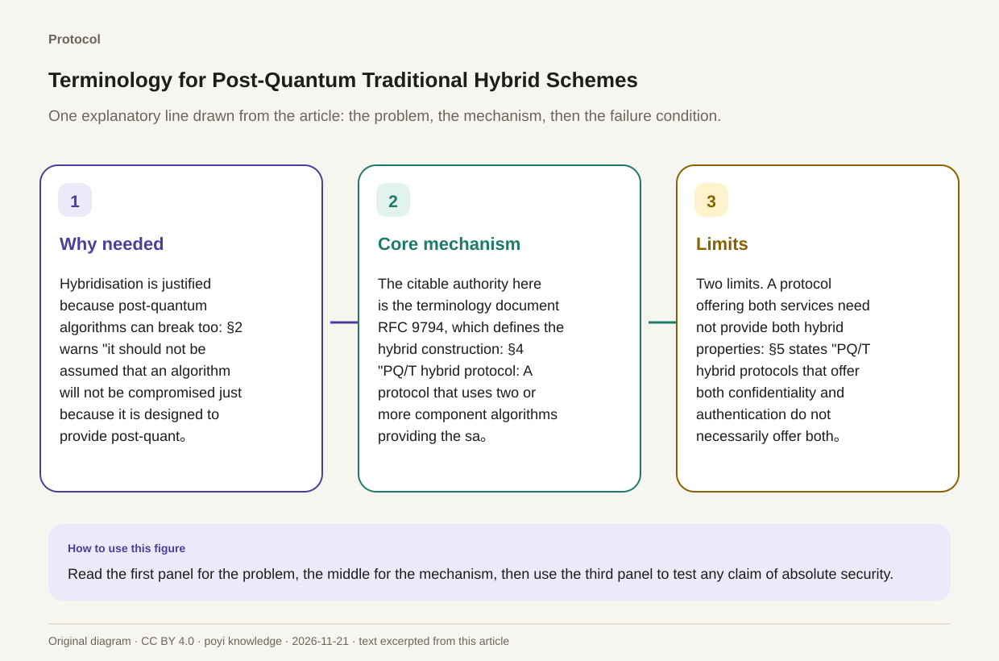
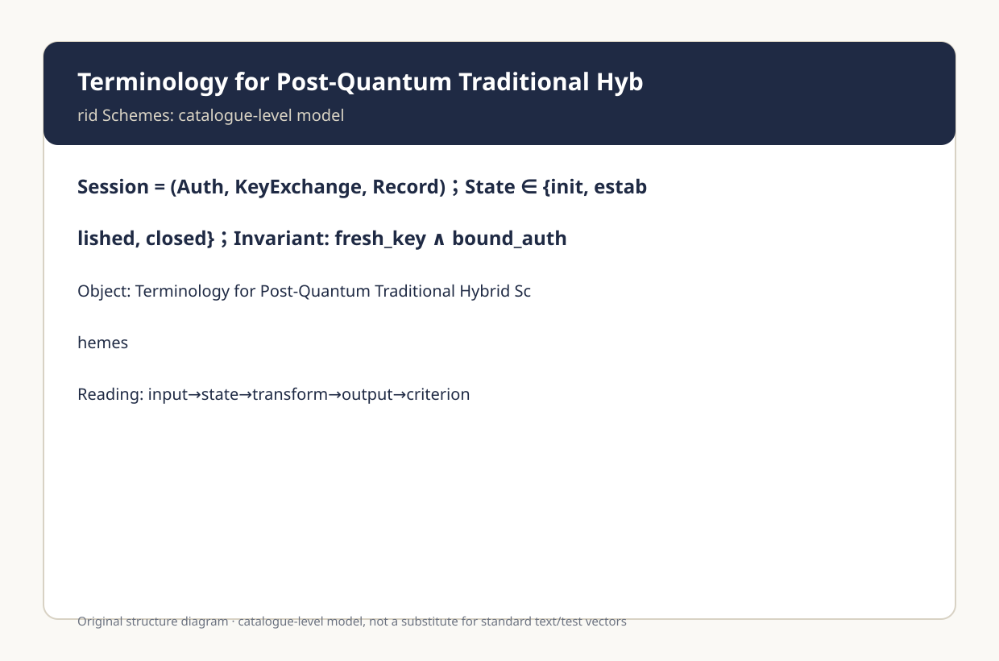

Principles
Protocol: Terminology for Post-Quantum Traditional Hybrid Schemes (PQ/T 混合方案术语). The citable authority here is the terminology document RFC 9794, which defines the hybrid construction: §4 "PQ/T hybrid protocol: A protocol that uses two or more component algorithms providing the same cryptographic functionality, where at least one is a post-quantum algorithm and at least one is a traditional algorithm." the same section defines the composite form whose fields and message flow match a single-algorithm version. §1 sets out why both algorithm classes are used and fixes the meaning of "post-quantum" and "traditional".

Why it matters
Hybridisation is justified because post-quantum algorithms can break too: §2 warns "it should not be assumed that an algorithm will not be compromised just because it is designed to provide post-quantum cryptography." §1 records the harvest-now threat: "Data encrypted today (in 2025) with an algorithm vulnerable to a quantum computer can be stored for decryption by a future attacker with a CRQC." §5 defines the hybrid property: it holds as long as at least one component algorithm providing that function remains secure.
Applications
The vocabulary separates two deployment paths: §4 uses "PQ/T hybrid protocol with composite key establishment" for a hybrid KEM that leaves protocol fields and message flow unchanged, and the composite-data-authentication form for exposing PQ and traditional signatures through a single interface. §5 gives selection advice: hybrid interoperability for interworking, implementation-security schemes “will likely require” hybrid confidentiality or authentication, and the document warns "It is not possible for one PQ/T hybrid scheme or PQ/T hybrid protocol to achieve all of the properties in this section."

Limits & attacks
Two limits. A protocol offering both services need not provide both hybrid properties: §5 states "PQ/T hybrid protocols that offer both confidentiality and authentication do not necessarily offer both hybrid confidentiality and hybrid authentication." giving the single-algorithm X.509 certificate example. And a hybrid certificate is not by itself hybrid identity authentication: §6 says "The use of a PQ/T hybrid certificate does not necessarily achieve hybrid authentication of the identity of the sender; this is determined by properties of the chain of trust."
History
The source is corrected after verification: the inventory cited RFC 9794(2025) under a post-quantum TLS handshake framing, but RFC 9794 is the June 2025 Informational terminology document (F. Driscoll and M. Parsons, UK National Cyber Security Centre; B. Hale, Naval Postgraduate School) that defines terms and specifies no TLS handshake. §1 also records the naming debate — some prefer “quantum-resistant” or “quantum-safe”, others worry those labels mislead once an algorithm falls, so the document uses “post-quantum”. As of this verification the corpus contains no Standards Track post-quantum TLS protocol RFC; hybrid deployment is still terminology-and-draft territory.
Worked example & verification
Formal model and reproduction steps
[\mathrm{Adv}^{\Pi}_A(\lambda)\le n\cdot\mathrm{Adv}^{\mathrm{prf}}F(\lambda)+\varepsilon{\mathrm{aead}}(\lambda)]
Terminology for Post-Quantum Traditional Hybrid Schemes: the registered public parameters, key material or randomness, and message are mapped through the stated transformation to an output checked against the registered criterion. The worked example is a structural reproduction, not a new test vector; parameter ranges, standard versions and implementation details remain source-bound.
References
- Wikipedia search entry for PQ/T 混合方案术语. https://zh.wikipedia.org/w/index.php?search=PQ%2FT%20%E6%B7%B7%E5%90%88%E6%96%B9%E6%A1%88%E6%9C%AF%E8%AF%AD
- Handbook of Applied Cryptography (Menezes, van Oorschot, Vanstone). https://www.cacr.math.uwaterloo.ca/hac/